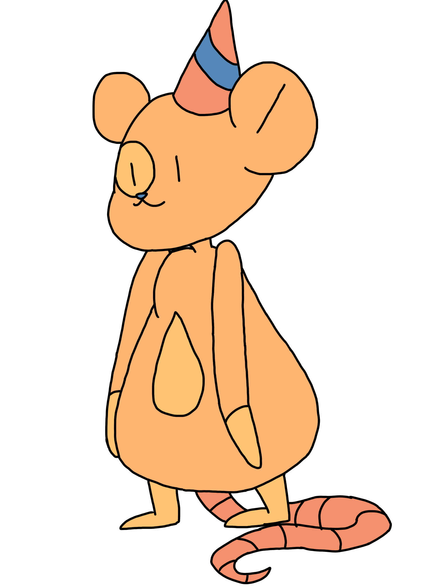
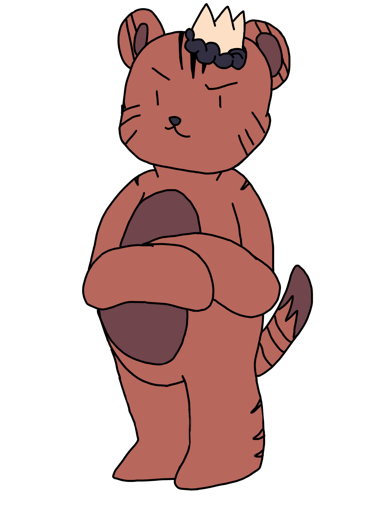
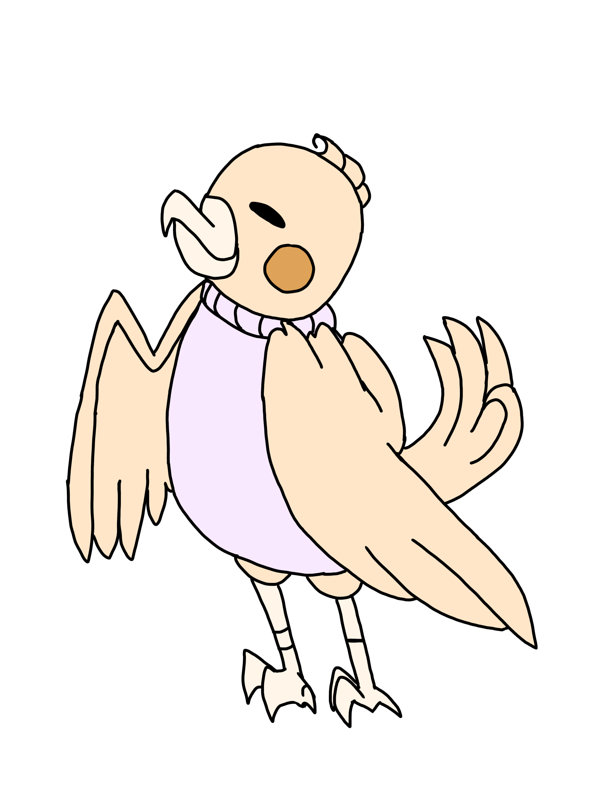

Hi!! I’m Fizzy and I’m the head of Fizzy Inc. I made this company as our world struggles with many issues from as little as shard dust cleaning to as big as comet crashes; I wanted to help clean up our problems and preserve our lives! I used to be a traffic guard for children and look forward to even our youngest recruits! It is okay if you don’t “have the experience” I’ll be glad to assist you along the way, unlike Swirls who takes advantage on your team! And I should know, we used to work together! He’s a crooked bunny! I am in charge of keeping everyone in check, happy, and available. I also take hold in big ceremonious events like the falling star festival.
FIZZ POPS
Founded in 2319; MOON inc.
↓ Fizzy Inc. Planner ↓

Pop's Info:
I am twins with Circy! I have firsthand experience with him and knows that he is a conmouse! I am also a planner for upcoming community events such as beach cleanups! I am CEO of Fizzy Inc. I have an awesome attitude, feel free to chat up with me! Our team strives for community help to help aid in the world’s health. I’ve been working here for quite sometime at Fizzy Inc. please join! We look forward to your input and world-changing ideas! Our team is much nicer than Circy Swirls!
↓ Fizzy Inc. Designer & Pep Leader ↓

Roy's Info:
I’m Prince Roy of Comet Shard and came here to aid in the help of this world’s health! I am a very thoughtful and cheeky tiger that looks forward to your input on anything for our incorporation! I am a part of the design team and pep team leader, as in, I make logos and such for events and encourage fellow team members. I also am allied with my brother who sends supplies from Comet Shard to prevent anything as bad as comets from hitting! I am a very nice tiger that looks forward to new recruits on our mission to help preserve the world! Circy Swirls has no chance!
↓ Fizzy Inc. Skill Teacher ↓

KK's Info:
Hello, I am KK. I used to be a fellow citizen that didn’t care much before I came here, and I love working with the team! Feel free to join in subunits of our incorporation, but don’t be afraid to aim higher! I am in charge of preparing new subunits and members about how they could help in the issues we have today, and I love working with them and new members! I am also in charge of fun events for citizens like the city of lights event! I am an ambitious bird, but I look forward to ambitious ideas! Feel free to start the spark! Unlike Circy Swirls who take advantage!
Facts on Team:
A team formed in 2319, and has been around for 20 years, it is well trusted in companies such as Spark, Fizzy Grape, Jing, and 50+ This production team solves problems as little as advertising these products to protecting this world from a comet. An Incorporation that started by Fizzy Dasc a Daschund who branched off companies from a probable scandal with Swirls Inc. The production team is well entrusted and makes sure to welcome new recruits; as of now it is looking for more ambitious players to help in the preserving of the world.